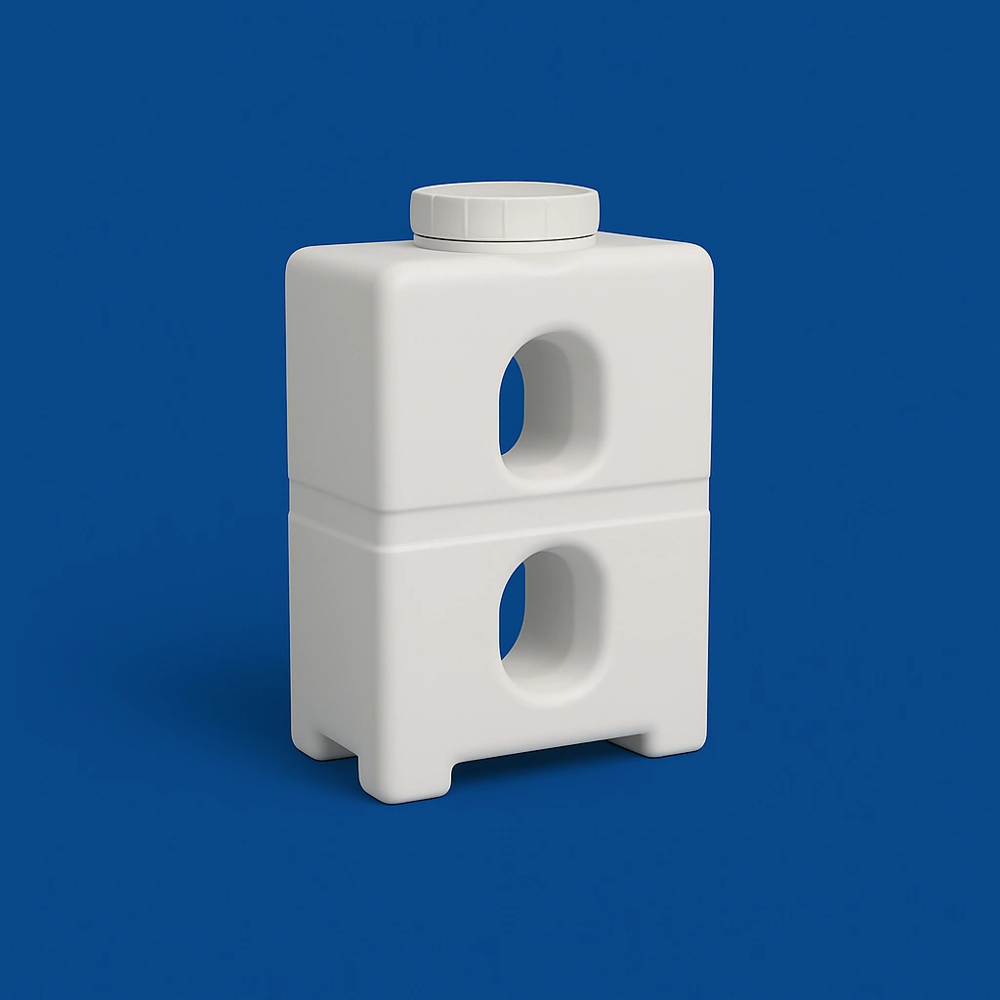

مشاوره فوری واتساپ
مشاوره فوری واتساپ
مخازن آسانرو طبرستان در حجمهای ۵۰۰ تا ۲۰۰۰ لیتر، برای عبور از دربهای باریک و محیطهای محدود طراحی شدهاند. به دلیل عرض کمتر، این مدلها انتخابی مناسب برای نصب در راهروها، آسانسور و فضاهای داخلی با دسترسی سخت هستند. مدلهای مکعبی و عمودی آن با درب ساده یا دو درب، در کاربردهای مسکونی، صنعتی و اداری استفاده میشوند. خرید مخزن آسانرو طبرستان با ارسال به پرند، رباطکریم و تهران از نمایندگی سالمی.

| نام محصول | کد محصول | حجم (لیتر) | طول (cm) | عرض (cm) | ارتفاع (cm) | افزودن |
|---|---|---|---|---|---|---|
| مخزن 500 لیتری مکعبی آسانرو | 1331251 | 500 | 130 | 56 | 94 | |
| مخزن 500 لیتری مکعبی آسانرو دو درب | 1331251 | 500 | 130 | 56 | 97.5 | |
| مخزن 1000 لیتری مکعبی آسانرو | 1331351 | 1000 | 161 | 60 | 137.5 | |
| مخزن 1000 لیتری مکعبی آسانرو دو درب | 1331351 | 1000 | 162.5 | 60 | 136 | |
| مخزن 1000 لیتری عمودی آسانرو | 1331352 | 1000 | 140 | 60 | 188.5 | |
| مخزن 1500 لیتری عمودی آسانرو | 1331400 | 1500 | 164 | 70 | 188.5 | |
| مخزن 2000 لیتری عمودی آسانرو | 1331421 | 2000 | 241 | 67 | 188.5 | |
| مخزن 2000 لیتری عمودی آسانرو جدید | 1331420 | 2000 | 223 | 65 | 191 |
کارشناسان ما آماده پاسخگویی و راهنمایی برای انتخاب بهترین مخزن آب متناسب با نیاز شما هستند.
این مخازن برای نصب در فضاهای داخلی با دسترسی سخت مانند راهرو، زیرزمین و اتاقهای باریک طراحی شدهاند.
بله، عرض اکثر مدلهای آسانرو کمتر از ۷۰ سانتیمتر است و از دربهای استاندارد به راحتی عبور میکنند.
مدلهای دو درب برای دسترسی آسانتر در هنگام نصب یا نگهداری استفاده میشوند، درحالیکه مدلهای معمولی تنها یک درب دارند.
مدلهای ۵۰۰ و ۱۰۰۰ لیتری بهترین گزینه برای آپارتمانها، ویلاها و محیطهای اداری هستند.